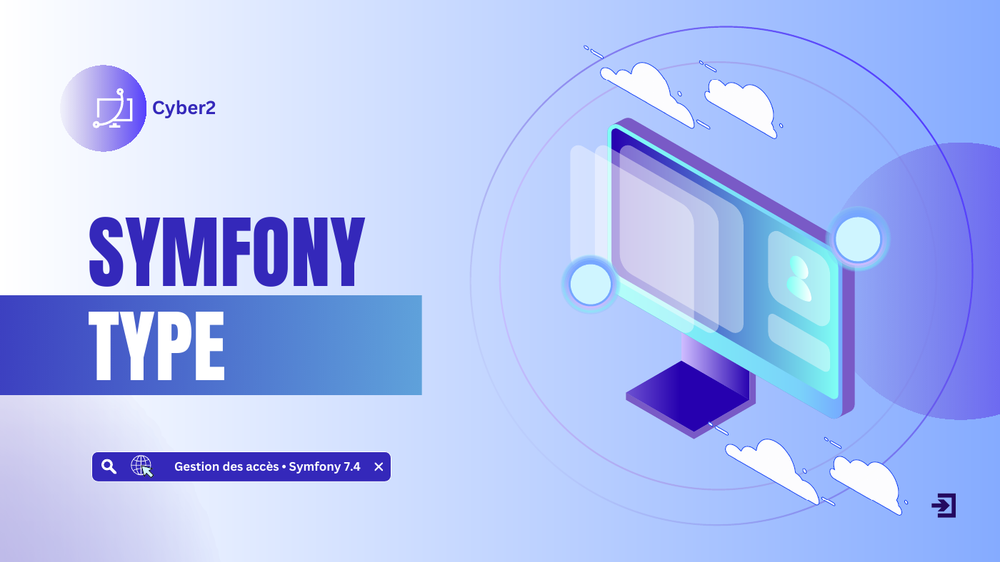
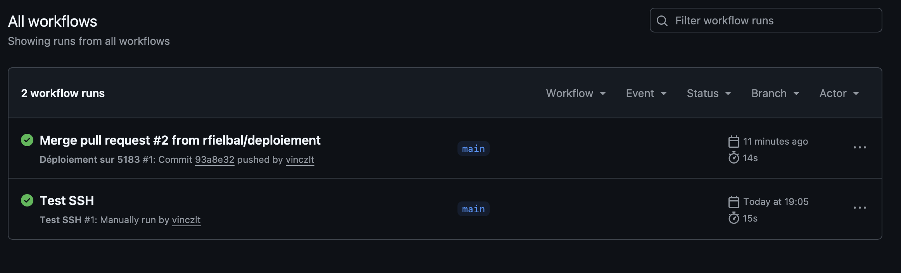

Robustesse et historique
La politique prévoit au moins 10 caractères, des catégories variées et le contrôle des mots de passe compromis. L’historique conserve des hashes, afin de refuser la réutilisation sans garder les mots de passe en clair.
PROJET / BTS SIO SLAM
Sécurisation des comptes Symfony et déploiement en binôme avec pull requests et GitHub Actions.
CYBER 02 / DU BESOIN À LA SOLUTION
Dans ce projet réalisé en binôme, j’ai travaillé sur la sécurisation d’une application Symfony : inscription, authentification, administration des comptes et traçabilité des connexions. Le travail collaboratif s’appuie sur des branches, des pull requests et un workflow GitHub Actions pour déployer la version intégrée sur le serveur commun.
BTS SIO SLAM · Semestre 3 · Travail en binôme

Parcourir le diaporama ↗ARCHITECTURE / UNE CHAÎNE DE CONTRÔLES
Formulaire → validation
Les données obligatoires et l’adresse e-mail sont contrôlées ; le rôle initial est celui d’un utilisateur.
Security → session
Symfony vérifie le mot de passe haché. Les échecs sont limités et un compte suspendu est refusé.
Mot de passe → historique
Le mot de passe courant est demandé ; le nouveau ne doit pas correspondre à un ancien hash.
ROLE_ADMIN → contrôles serveur
L’administrateur gère les comptes et consulte les connexions. Les actions sensibles sont protégées par CSRF.
CHOIX TECHNIQUES
Les contrôles ne reposent pas sur les seuls boutons de l’interface. Les rôles, l’état du compte et les jetons CSRF sont vérifiés côté Symfony. La désactivation d’un compte ou une modification sensible invalide sa session lors d’une requête ultérieure.
La politique prévoit au moins 10 caractères, des catégories variées et le contrôle des mots de passe compromis. L’historique conserve des hashes, afin de refuser la réutilisation sans garder les mots de passe en clair.
User porte le compte et ses rôles. HistoriqueMdp conserve les anciens hashes. HistoriqueConnexion conserve les connexions réussies. Le diaporama présente leur modèle de données.
GITHUB / COLLABORATION & DÉPLOIEMENT
Nous organisons les évolutions sur des branches distinctes. Une pull request rend les changements visibles et permet leur relecture avant l’intégration dans main. GitHub Actions prend ensuite en charge la mise à jour du serveur.
Les modifications sont versionnées sur une branche de travail, séparée de main.
Le binôme examine les changements. La règle de fusion demande une approbation.
La fusion dans main déclenche le workflow deploy.yml. Un lancement manuel reste possible.
GitHub Actions ouvre la connexion SSH puis exécute la mise à jour sur le serveur commun.
Le workflow vérifie la branche et l’absence de modifications locales sur le serveur. Il récupère main avec git pull --ff-only, installe les dépendances de composer.lock, applique les migrations Doctrine et renouvelle le cache Symfony.
Les paramètres de connexion et la clé SSH sont fournis par les secrets GitHub. L’identité du serveur est vérifiée, les déploiements sont exécutés un par un et la clé temporaire est supprimée à la fin du workflow.
Consulter le workflow ↗
main — commit 93a8e32.RÉALISATION & SUPPORTS
Le diaporama présente les contrôles de sécurité, la protection de la branche principale et la chaîne de déploiement GitHub Actions.
REPÈRES E5 / Formation · projet en binôme
Octobre 2026
Gérer les habilitations, les comptes et les règles d’accès.
Faire évoluer une application web reliée à une base de données.
Organiser le travail en binôme avec des branches, des pull requests et une approbation avant fusion.
Automatiser le déploiement avec GitHub Actions et documenter les parcours utilisateur et administrateur.
Diaporama, MCD, pull requests, workflow et capture du déploiement réussi après la PR nº 2.
Voir la ressource ↗